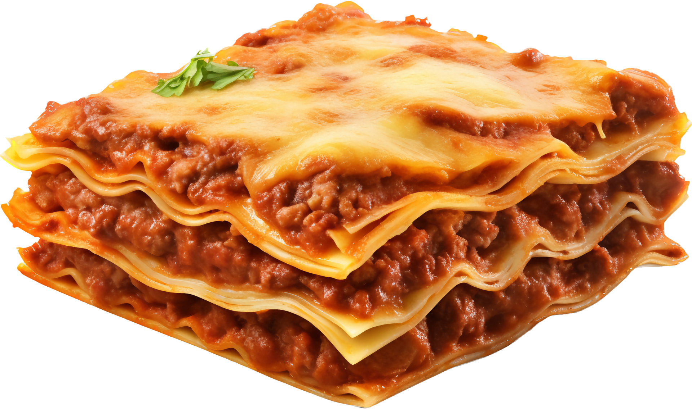

How to make the best Lasagna of your life
Making lasagna can be time-consuming, but the results are well worth the wait.
You'll find a detailed ingredient list and step-by-step instructions in the recipe below, but let's go over the basics:
The Allrecipes community adores this lasagna recipe because it's incredibly customizable, so you can easily alter the ingredient list to suit your needs.
If you want to stay true to the original recipe, though, these are the ingredients you'll need to add to your grocery list:This super meaty lasagna has sweet Italian sausage and lean ground beef.
An onio and two cloves of garlic are cooked with the meat to add tons of flavor.
You'll need a can of crushed tomatoes, two cans of tomato sauce, and two cans of tomato paste.
Two tablespoons of white sugar add subtle sweetness and enhance the flavor of the sauce.
This lasagna recipe is flavored with fresh parsley, dried basil leaves, salt, Italian seasoning, fennel seeds, and black pepper.
Use store bought
Parmesan, mozzarella, and ricotta cheese make this lasagna extra decadent.
An egg helps bind the ricotta so it doesn't ooze out of the lasagna when you cut into it.
Here's a brief overview of what you can expect when you make homemade lasagna:
The detailed layering instructions can be found in the recipe below, but this is the order you'll follow
The assembled lasagna should take about 50 minutes to cook in an oven preheated to 375 degrees F.
it with foil for the first 25 minutes, then let it cook uncovered for the final 25 minutes.
Also, it's important to let the lasagna rest at room temperature for about 15 minutes before you cut into it.